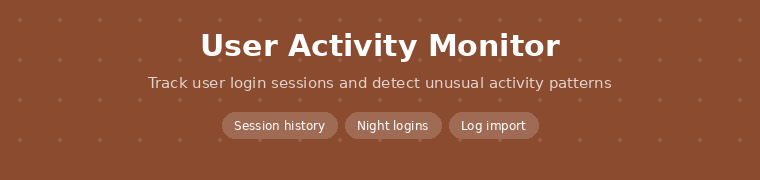
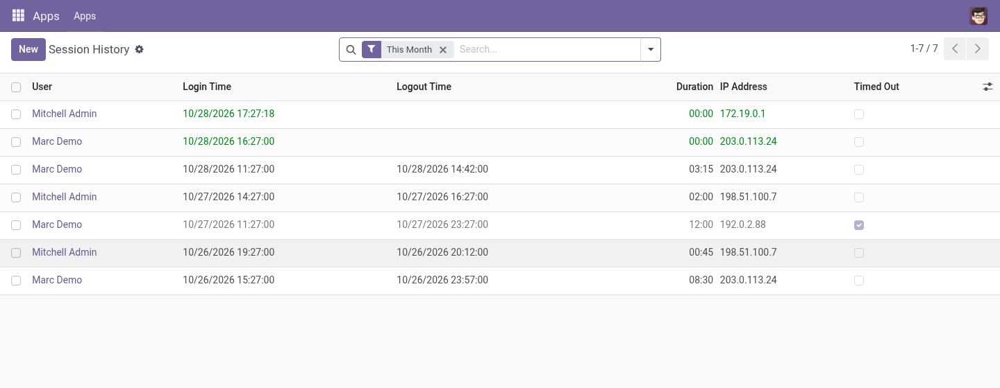

A login history for every user: when, from which IP and browser, for how long, with filters for night-time and abandoned sessions.
Odoo 17.0 Community & Enterprise Free · AGPL-3

Session History: one line per login, open sessions in green, timed-out ones greyed.
User, login and logout time, duration, IP address and browser.
Night sessions (00:00-06:00 UTC), still open, timed out; group by user, IP or hour.
An hourly job closes sessions with no logout after 12 hours and marks them timed out.
Read earlier logins from the Odoo log file, so history starts before install.
Free and open source (AGPL-3) by Paulius Gaizauskas · Questions or bugs: GitHub issues